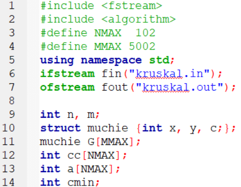

| Explicarea declarațiilor | Codul corespunzător |
|
m – numărul de muchii din graf muchie - reprezentarea unuei muchii prin extremitățile x și y, respectiv costul c G – reprezentarea grafului dat prin lista muchiilor ordonate crescător după cost (un vector cu m elemente) cc – vector cu n elemente în care vom reţine evidenţa componentelor conexe (cc[i] = componenta conexă de care aparține vârful i) a – arborele parţial de cost minim (vector cu n-1 elemente în care vom reţine indicii din G ai muchiilor selectate) cmin - costul arborelui parțial de cost minim |
 |
| Explicarea declarațiilor | Codul corespunzător |